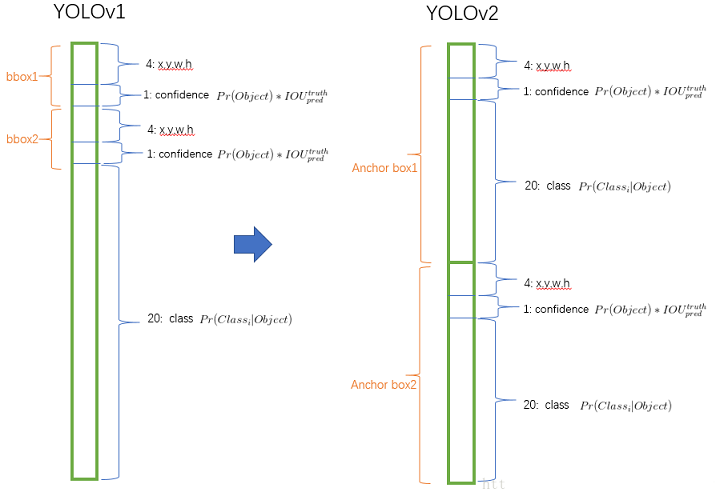
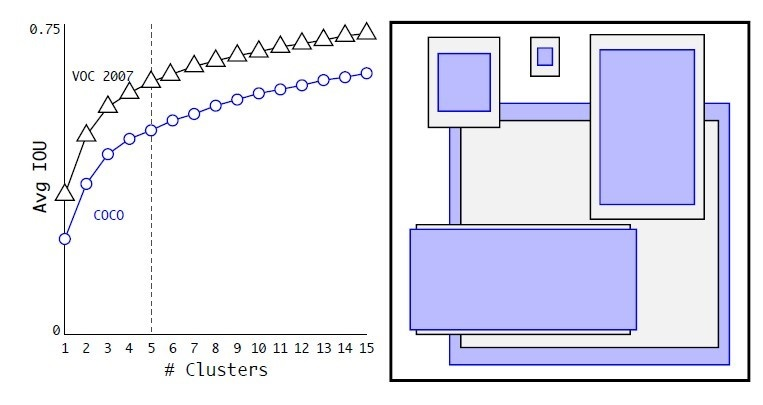
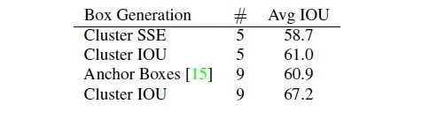
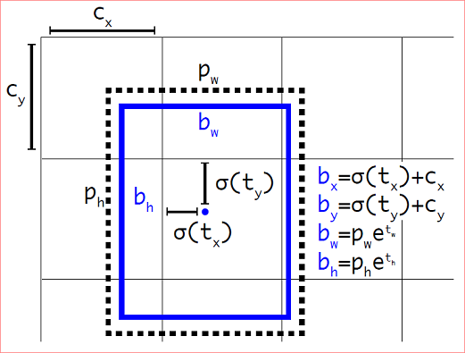
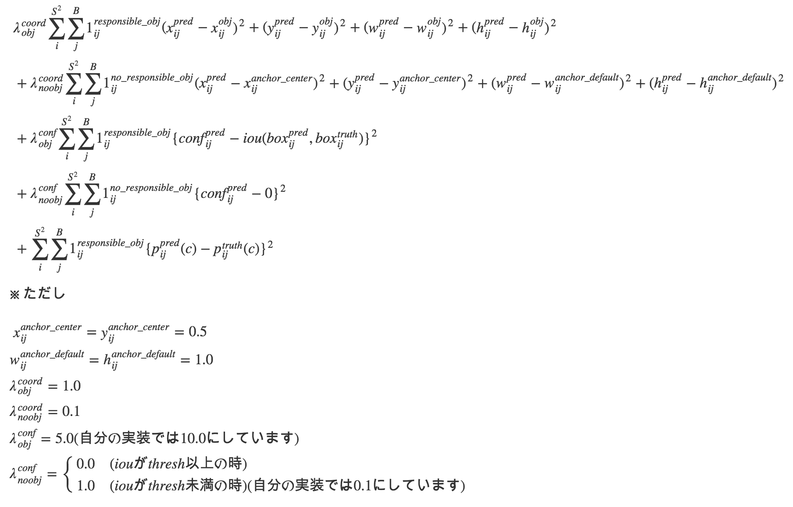
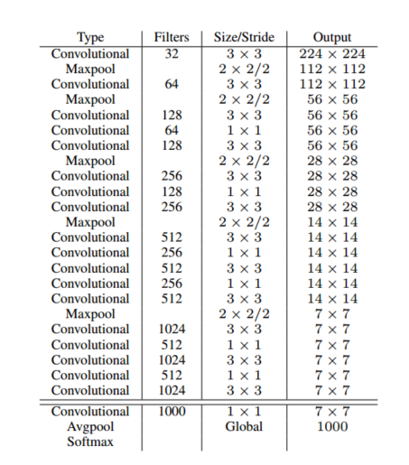

本文针对 Yolo v2 的一些处理方法和细节给出了自己的理解。不一定正确，如有错误请指正。
本文尝试了使用一系列的方法来提升检测效果。
Better
Batch Normalization
- 在所有卷积层后加 Batch Normalization。
- mAP 提高了2%。
High Resolution Classifier
- Yolo v1 使用 224×224 的图像预训练分类器，并用来对448的图像进行检测。这意味着网络的卷积层要在适应新的分辨率的同时还要学习检测。
- Yolo v2 直接使用 448×448 的图像进行预训练。
- mAP提高了4%。
Convolutional With Anchor Boxes
- Yolo 通过在卷积层上加全连接层来直接预测bbox的坐标。而 Faster R-CNN 使用 RPN 网络来预测 bbox 相对于 anchor 的 offset 和 confidence。预测 offset 比直接预测坐标来得简单。
- Yolo v2 去除了全连接层，并减少了一个 Pooling 层。这样最后的 feature map 尺寸是输入的1/32。在这里，网络使用 416 尺寸而不是 448，因为作者想要最后的 feature map 尺寸为奇数。$416\div32=13$。这是因为作者观察发现，很多物体都在图像的中间，因此检测这些图像中间的物体时，只需用最中心的那个位置而不是偶数情况下的中心4个位置。(个人理解为：在这种情况下，那些在图像中心位置的物体的中心点都会落在这 $13\times 13$ 栅格的中心格子中)
- 使用 anchor boxes 预测坐标的同时，Yolo v2 还对 conditional class probability 的预测机制和空间位置（栅格）做了解耦。
在Yolo v1 将输入图像划分为 $S×S$ 的栅格，每一个栅格预测 $B$ 个 bounding boxes，以及这些 bounding boxes 的 confidence scores。
每一个栅格还要预测 $C$ 个 conditional class probability（条件类别概率）：$Pr(Classi|Object)$。即在一个栅格包含一个 Object 的前提下，它属于某个类的概率。且每个栅格预测一组 ($C$个) 类概率，而不考虑框 $B$ 的数量。
Yolo v2 不再由栅格去预测条件类别概率，而由 Bounding boxes 去预测。在 Yolo v1 中每个栅格只有1组条件类别概率，而在 Yolo v2 中，因为每个栅格有 $B$ 个 bounding boxes，所以有 $B$ 组条件类别概率。
在 Yolo v1 中输出的维度为 $S\times S \times (B \times 5 + C )$，而 Yolo v2 为$S \times S \times (B \times (5 + C))$。如下图所示。 - 使用了Anchor box 后，mAP 从 69.5% 降到了 69.2%，但是 recall 从 81% 增加到了 88%。

Dimension Clusters
采用 Anchor 机制后遇到两个遇到 两个问题 ，其中 第一个 为 anchor 尺寸的设置问题。Faster R-CNN 等网络的 anchor 的尺寸是人工选定的，虽然网络可以通过学习来调整预测框的尺寸，但是如果一开始就给一个较合适的 anchor 的话，网络学习起来会更加的容易。Yolo v2 通过 k-means 的方式来学习到 anchor 的尺寸分布情况。对训练集中的所有标定的框，即 GT box，根据他们的 (x,y,w,h) 的值进行 k-means 聚类。如果将用 (x,y,w,h) 来代表一个 GT box，并用4维向量的标准欧式距离来作为距离度量的话，大的框可能会比小的框产生更大的误差，比如 (1,1,2,2) 和 (2,2,4,4) 的欧式距离为$\sqrt{10}$，而 (2,2,4,4) 和 (4,4,8,8) 的欧式距离为 $2\sqrt{10}$，而如果采用IoU的度量方式，这两对框的距离相等都是3/4。而后一种情况所代表的两种框是前一种情况两种框尺寸的两倍。因此，可以看出，采用IoU的方式作为两个框之间的距离度量，可以避免框的尺寸带来的影响。
通过聚类，可以将所有的 (x,y,w,h) 聚为 k 类，最后得到 k 个类别中心，这 k 个类别中心就代表 k 个矩形框。论文中使用 Dimension Clusters 的结果如下图所示。

在网上看到另一种说法
算法过程（k-means）是: 将每个 bbox 的宽和高相对整张图片的比例 $(w_r,h_r)$ 进行聚类,得到 k 个anchor box.
算法实现代码可以参考: k_means_yolo.py
其实根据距离函数就可以看出，k-means 一定是对 (x,y,w,h) 进行聚类的（计算 IoU 需要用到 (x,y) ）。只不过最后不关注聚类中心的 (x,y) ，只关注聚类中心的 (w,h)。上面代码中的操作也证实了这一点。
与手工挑选的相比，使用 Dimension Clusters 的方法效果更好。对比效果如下图所示。

其中 Cluster SSE 表示使用 sum squared error 作为度量进行聚类，Cluster IoU 表示使用 IoU 作为度量进行聚类。Anchor boxes 为采取类似 Faster R-CNN 中的方法。
Direct location prediction
前面提到了两个问题，其中 第二个 问题是：模型的不稳定性。不稳定性主要来源于预测框的(x,y)坐标。在 RPN 中，网络预测 $t_x$ 和 $t_y$ ，因此，框的中心(x,y)计算方式为:
在原论文中，$x_a$ 和 $y_a$ 前使用的是减号，估计是作者的笔误。其中，$w_a$ 和 $h_a$ 为 anchor 的宽和长。如果 $t_x>0$，bounding box 会向右移动 anchor 宽的 $t_x$ 倍，如果 $t_x<0$，bounding box 会向左移动 anchor 宽的 $t_x$ 倍。由公式可以看出，由于 $t_x$ 和 $t_y$ 没有限制（取值范围没有限制），因此最后得到的 $x$ 和 $y$ 可以落在图像上的任意一个位置，因此一个 anchor 可能检测一个离自己很远的物体，尽管这个物体应该由离其自身近的 anchor 来检测。
Yolo v2 不采用预测 offset 的方法，而是延续 Yolo v1 预测 bbox 相对每个 grid cell 左上角的坐标，确保每个 bbox 的中心落在 grid cell 内。作者使用 logistic 函数来约束预测值。
对网络的输出 feature map (13×13)，Yolo v2 对每一个 grid cell 预测 5 个 bbox (对应 5 个 anchor)，每个 bbox 由 5 维向量 $( t_x,t_y,t_w,t_h,t_o)$ 表示。因此，对 feature map 上的每一个位置来说，都会预测出一个 5×5 的向量。(要牢记 feature map 上的每一个位置都对应图像上的一个 grid cell )。如果这个 grid cell 的左上角距离图像左上角偏移为 $(c_x,c_y)$，anchor box 的宽高为 $p_w, p_h$，那么这个预测的 bounding box 的中心点为 $(b_x, b_y)$，宽高为 $(b_w, b_h)$。计算方式如下图:

$\sigma(t_x)$ 是 bounding box 的中心相对栅格左上角的横坐标，$\sigma(t_y)$ 是纵坐标。$\sigma(t_o)$ 是 bounding box 的 confidence score。
这样，就可以预测出 5 组 bbox.
个人理解: 由于预测的值是 $( t_x,t_y,t_w,t_h,t_o)$ 这 5 个数，且 $(b_x,b_y,b_w,b_h,confidence)$ 可以由上面的预测值计算出来，因此不确定最后的 GT 向量是用哪一个来计算 loss。个人猜测是 $(b_x,b_y,b_w,b_h,confidence)$。因为这样与 Yolo v1 中的 loss 一致。因此有可能 5 个 GT 都是一样的，就像 Yolo v1 中的一样。
通过阅读损失部分源码，感觉上面的猜测不正确。应该是使用 $(t_x,t_y,t_w,t_h,t_o)$ 这 5 个数进行损失计算的。
1 | float delta_region_box(box truth, float *x, float *biases, int n, int index, int i, int j, int w, int h, float *delta, float scale, int stride) |
从代码可以看出，计算每一个 bbox 的损失时，是将当前 bbox 所在 cell 对应的 GT box 的 $(x,y,w,h)$ 转换成 $(t_x,t_y,t_w,t_h)$ 后，再跟网络输出的预测值计算损失的。可以看出，针对同一 cell 内不同的 anchor 对应的预测框（一个 anchor 对应一个预测框），它们的 $(t_x,t_y)$ 真实值都是相等的，因为 $i,j$ 是 cell 的索引，所以对某一 cell 内的预测框来说，$i,j$ 都是相等的。但是 n 是 cell 内预测框，或者是 anchor 的索引，因此对每个预测框来说，他们的 $(t_w,t_h)$ 的真实值是不等的。（这里没有说一个 cell 是否只计算 responsable 的那个 bbox 的损失，需要查看别的地方的代码）
Yolo v2 论文没有给出损失函数。网上找到的一个损失函数如下，不知正确与否。

Fine-Grained Features
上述网络上的修改使 Yolo v2 最终在 13×13 的特征图上进行预测，虽然这足以胜任大尺度物体的检测，但是用上细粒度特征的话，这可能对小尺度的物体检测有帮助。Faster R-CNN 和 SSD 都在不同层次的特征图上产生区域建议（SSD 直接就可看得出来这一点）（Faster R-CNN 有吗？），获得了多尺度的适应性。这里使用了一种不同的方法，简单添加了一个转移层 ( passthrough layer )，这一层要把浅层特征图 （分辨率为 26×26，是底层分辨率4倍）连接到深层特征图（concat）。
补充：关于 passthrough layer，具体来说就是特征重排（不涉及到参数学习），前面 26×26×512 的特征图使用按行和按列隔行采样的方法，就可以得到4个新的特征图，维度都是 13×13×512，然后做 concat 操作，得到 13×13×2048 的特征图，将其拼接到后面的层，相当于做了一次特征融合，有利于检测小目标。
Multi-Scale Training
为了使网络具有较强的尺寸鲁棒性，即对不同尺寸的输入都有较好的检测效果。Yolo v2 每迭代几个 epoch 后就会随机选择输入图像的尺寸。由于网络下采样率为32，因此尺寸都是32的倍数，从 ${320,352,…,608}$ 中随机选择。这样，网络不得不学着对不同分辨率的图像都要检测得很好。
Faster
为了速度，避免使用 VGG-16。提出了 Yolo v2 专用网络 Darknet-19。
Darknet-19
特点：
- 主要使用 3×3 卷积核
- 每次 Pooling 后，通道数翻倍
- 在 3×3 卷积之间使用 1×1 进行特征压缩表示
网络参数如下图所示:

在进行检测时，将Darknet-19的全连接去掉，换上3个 3×3 的卷积层，每一个卷积层通道均为 1024，每一个 3×3 卷积后面都要接上一个 1×1 的卷积。最后的输出尺寸为 $13×13×(5×(5+20))=13×13×125$。在最后一个 3×3×512 层和倒数第二个卷积层之间加上了 passthrough layer.